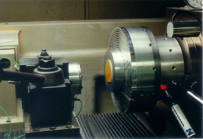

INTRODUCTIONDespite the great progress achieved in the past years regarding ultra precision machining, there is still a lack of knowledge concerning the cutting mechanism and also about the excellent cutting conditions during machining with mono crystalline tools. The work piece material properties and its orientation and crystalline structure, the cutting tool material geometry and properties, the cutting fluid properties and machine-tool static, and the dynamic and thermal behavior have a great role on this process. These parameters interact with tensions, strengths and temperatures, in a way that these have, direct or indirectly, influence on the final work piece quality. A useful end essential tool in the understanding of phenomena that occur in machining is among others, therefore, the components strength that occur during this fabrication process analysis. OBJECTIVESWith this job it is objected a greater knowledge of the different work variables influence over the strength components during ultra precision machining, with a system developed and produced specially to measure these forces. This system allows the measurement of passive and very low cutting forces, in levels a lot inferior to 100 mN. PROCEDURESThe passive and cutting forces behavior with the variation of the different machining parameters and work variables is systematically analyzed from feed variations, cutting depth, diamond cutting tool geometrical parameters and others important process variables. For this, machining essays are realized in infra red crystals (zinc sulfate, Cleartran™ and germanium) and metallic materials (copper and aluminum alloy) with diamond cutting tools under different work conditions and the components strength behavior are analyzed.  RESULTSThe results obtained show that the strength measure system in the ultra precision machining has enough sensibility for a detailed analysis of the characteristic machining parameters in ultra precision operations. Based on the obtained results, more adjusted parameters can be determined to the optic elements production in each of the assayed materials, and analyzed the influence that the process variables have over the result.
|

{kind=link}